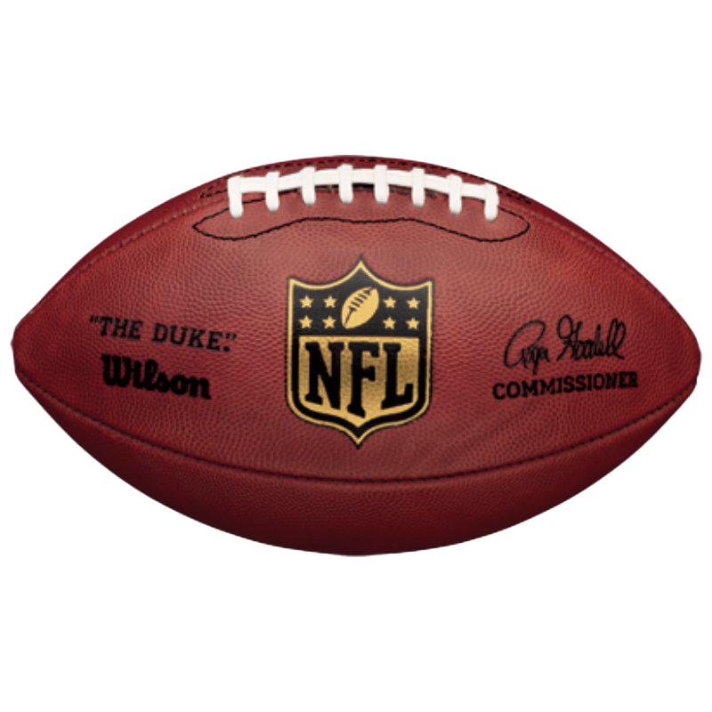

What Is the NFL?

The National Football League, commonly known as the NFL, is the highest level of professional American football in the United States. The league consists of 32 teams that compete during the regular season for the opportunity to reach the playoffs and compete for the Super Bowl.
The NFL is divided into two conferences, the American Football Conference (AFC) and the National Football Conference (NFC). Each conference contains 16 teams, which are divided into four divisions.
How Football Works
The basic goal of football is to score more points than the opposing team. The team with the ball is on offense, while the other team plays defense.
How a Drive Works
- The offense starts with possession of the football.
- The offense has four downs to gain at least 10 yards.
- If the offense gains 10 yards, it receives a new set of four downs.
- The offense can score a touchdown, kick a field goal, or punt.
Ways to Score
- Touchdown - 6 points
- Field goal - 3 points
- Extra point - 1 point
- Two-point conversion - 2 points
- Safety - 2 points
Football Positions
Each football player has a specific role on the field. Learning the basic positions can make watching an NFL game much easier for a new fan.
- Quarterback: Leads the offense and throws or hands off the football.
- Running Back: Primarily runs with the football and can catch passes.
- Wide Receiver: Runs routes and catches passes from the quarterback.
- Offensive Lineman: Blocks defenders to protect the quarterback and create running lanes.
- Linebacker: Helps defend against running plays and passes.
- Cornerback: Defends against opposing wide receivers.
- Safety: Plays deeper in the defense and helps stop passing plays.
NFL Teams
The NFL has 32 teams divided between the AFC and NFC. Here are a few examples of NFL teams and their divisions.
| Team | Conference | Division |
|---|---|---|
| Kansas City Chiefs | AFC | West |
| Buffalo Bills | AFC | East |
| Dallas Cowboys | NFC | East |
| Green Bay Packers | NFC | North |